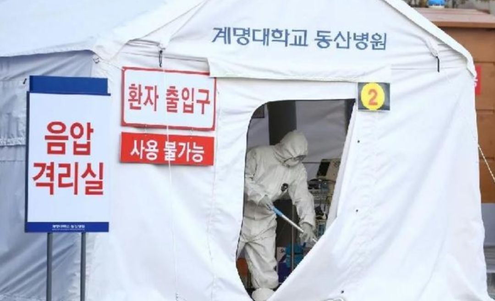

大邱实施“最大程度封锁”，韩国最糟情况是疫情持续至年底
原文链接 备份链接 “如果疫情长期扩散，我们的医疗体系会崩溃” 2月25日，韩国总统文在寅（前排左一）到访大邱，称力争本周内控制局势，让拐点尽快到来。中新社发 青瓦台供图 摄 在韩国总统文在寅亲临一线考察四天后，韩国新冠疫情重灾区大邱市的 …


摘要：刘永辉在韩国岭南大学读博。学校所在地大邱是韩国新型冠状病毒肺炎疫情最严重的地区，2月28日下午（截至当地时间16时），大邱累计确诊1579例新冠肺炎病例，占韩国总数的67.6%，仅仅过了一个晚上，到当地时间2月29日10时，确诊患者已经是2055人。刘永辉体验了韩国政府的各项防疫举措，也见证了韩国民众的态度变化。
文 |陈怡含
编辑 | 林鹏
2月27日，刘永辉坐在宿舍，面前摆着一份丰盛的便当：炸鸡、蒸饺、沙拉、泡菜、甜点。门外，韩国国务总理丁世均戴着口罩经过，被人群簇拥着视察学校的防疫工作。
这位29岁的中国男生从未想过，来韩国十年，自己会以这种方式见到韩国国务总理。
刘永辉在韩国岭南大学读博。学校所在地大邱是韩国新型冠状病毒肺炎疫情最严重的地区，2月28日下午（截至当地时间16时），大邱累计确诊1579例新冠肺炎病例，占韩国总数的67.6%，仅仅过了一个晚上，到当地时间2月29日10时，确诊患者已经是2055人。
在2月16日返校之前，刘永辉在老家经历了半个多月的“中国式防疫”。截至他离家那天，那个中国东部小城有十几例新冠肺炎确诊病例，而大邱尚未出现确诊患者，他觉得，自己是从一个相对安全的地方到了一个更加安全的地方。
但是情况在两天后骤变。2月18日，韩国第31号患者（注：指确诊新冠肺炎的第31例患者）出现，这位61岁的妇女是“新天地教会”成员，出现症状后几度回避医院的核酸检测建议，并在2月9日和16日参加了礼拜活动。同期参加礼拜活动的教徒约有千人。疫情很快扩散，短短10天，大邱的确诊人数从0升至1579，又很快突破两千。
据中新网，“新天地教会”在韩国争议极大。2016年韩国基督教联合会发公告，认定“新天地教会”是打着基督教幌子的“异端”，要求信众警惕。因此，不少该教会的教徒在疫情发生后隐瞒身份、不配合调查，甚至继续“潜入”其他教堂“布道”，造成传染扩散。
这些日子，刘永辉体验了韩国政府的各项防疫举措，也见证了韩国民众的态度变化。
以下是他的口述：
“刚回来的那几天，我觉得太安全了”
我高中毕业就过来韩国，在这里读了本科、研究生，现在在读博士，大概还有两年就毕业了。
作为留学生，最关注的还是韩国会不会对我们的入境采取限制措施。疫情发生以来，韩国网络上关于全面禁止中国人入境的声音很高。最明显的是青瓦台的国民请愿，目前已经达到七十多万人。
（编者注：2017年8月起，韩国总统府青瓦台的官网开设国民请愿系统，任何韩国国民都可以在系统上发起与国家事务相关的请愿，如果30天内请愿人数达到20万，相应官员会做出回复。）
最早韩国只是加强了中国入境人员的检疫，2月4号开始，持有湖北省签发的护照或武汉总领事馆签发的签证的人，一律禁止入境。2月中旬，韩国政府开始强烈建议中国留学生休学，但只是强烈建议，至今对于湖北以外的人员没有任何强制限制。
我是2月16日返回韩国的，路线是乘飞机到首尔，再乘火车到大邱。飞机上，空姐和空少都戴着口罩和手套。飞机降落后，他们检测好所有乘客的体温，确认没有异常，大家再下飞机。
我们走的是从中国入境的专用通道。首先被引导到一个检查点，穿着防护服、戴着护目镜的医务人员会把护照收走，因为下一个检查点距离较远，他们担心有人中途离开队伍。医务人员对我们进行问询，有没有相应的症状、近期是否去过湖北等等。
下一个检查点距离海关只有几步路，在这里，护照会交还到我们手上。工作人员监督我们下载一个APP，并在上面填写好个人信息。APP是新开发的，2月12日开始，所有从中国入境的人员，不论国籍，必须安装。14天隔离期内，需要每天在上面汇报健康情况，是否发热、是否咳嗽或咽喉痛、是否呼吸困难等等，如果没有汇报，第2天会有相关部门打来电话，连续两天没有汇报，第3天他们会直接联合警方到住所找你。

2月16日，刘永辉等待从专用通道入境韩国。（图片由受访者提供）
从中国入境的专用通道里，几乎每个人都戴着口罩。但通过海关之后，对防疫的重视程度明显降低。首尔仁川机场的人流量和往日一样，大约一半的人戴着口罩。我乘坐直通列车前往首尔站，上车前没有任何健康检查，月台上也没有看到消毒的工作人员。首尔站也是一切如常，没看到有工作人员戴口罩。
回来之前，我了解到大邱的个别中国人遇到了被出租司机拒载的情况，为了防止这种情况发生，我请了位朋友开车来接。
第31号患者出现之前，我完全没有想到韩国的疫情会发展到这种情况。当时我预想，韩国最终的累计确诊人数至多一百多，2015年韩国的中东呼吸综合征患者也没有超过200人。
刚回来的那几天，我觉得太安全了。当晚我就跟朋友去吃了自助餐，毕竟在国内哪儿也去不了，闷了那么多天。餐厅里人很多，服务员没有任何防护，说实话，当时没觉得有什么危险，我自己都没有戴口罩——进餐厅前，我和朋友把口罩放在了车上。
我还点过一次外卖，配送员也没有戴口罩。超市、便利店的员工也有没戴口罩的，有些虽然戴着，鼻子却露了出来。该集会的集会，该聚餐的聚餐，我的朋友圈里，有人还像往常一样在夜店蹦着。
31号患者的新闻出现时，很快就引起了我的注意。
31号患者所在的“新天地教会”我也听说过，在韩国争议极大。还有一个其他的教会，最近他们在首尔附近办了一场3万人的集体婚礼，如果这里出现确诊者，那就完了，就像在人群中投入一枚炸弹。
最近一周，大邱西区的传染病防控主任和副市长秘书等人相继确诊，都没有非常突破我的认知。因为我知道韩国教会的渗透力很强，一些官员或知名教授是某某教徒，都是很正常的。很多“新天地教会”教徒会向家人、朋友隐瞒身份。前几天一直有新闻称韩国政府尚未拿到完整的“新天地教会”教徒名单，还有一些名单上的人联系不上或拒绝配合。25号，京畿道知事李在明强行进入了他们那里的“新天地教会”总部，得到了整个京畿道地区的教徒名单。
我个人认为这件事在韩国的反响蛮大的，政府强行进入某个地方搜查，在韩国是很难的。放在往常，一定会有反对的声音，一些在野党也会拿它做文章。但现在“新天地教会”在韩国的口碑已经坏到爆炸，网络上骂声一片，青瓦台网站有人请愿解散“新天地教会”，截至2月28日，已经有110多万人支持。
现在韩国政府要对所有“新天地教会”教徒进行调查，新天地也说会积极配合，提供教徒名单，但这个名单是不是完整的，我持一个比较怀疑的态度。我会有点担心，身边隐藏着新天地教徒。
不过担心也没有用，这些是我们无法控制的，我们能做的就是做好防护、尽量远离确诊者出现过的地方。31号患者出现之后，我去哪儿都戴着口罩，哪怕是从出租屋下楼进到车里，这样不到四五十秒的路程。隔壁学校有一位韩国学生确诊，与我的直线距离只有400米，网上曝出他去过附近的一家小超市，之前经常路过，现在我都绕着走。
我们学校也有一位韩国女学生确诊，我是在韩国最大的中文社区网站看到消息的，上面说她17号与一位朋友共进晚餐，得知朋友在20号确诊后，她第二天就前往筛查诊疗所，检测结果为阳性。目前，学校封锁了她居住和确诊前短暂停留过的两栋宿舍楼。
3分钟收到7条警报
疫情初期，韩国政府的反应比民众快了很多。
韩国出现第一例确诊患者之后，就开始每天定时播报疫情数据，上午九十点钟一次，下午四五点钟一次。新冠肺炎专门的网页也很快建了起来。
31号患者出现之前，学校就对疫情的防控比较重视。原本住在校内的中国留学生，返校后在宿舍强制隔离14天，想要离开宿舍必须打申请。住在校外的也要自行隔离，学校每天会打来电话询问健康情况。

学校发给刘永辉的防疫物资。（图片由受访者提供）
31号患者出现时，韩国民众并没有很快重视起来。之后连续几天确诊人数暴增，对于普通民众而言，这个数据是最直观的，大概从这周开始，能明显感觉到人们的重视程度有所提高。
街上的人流减少了三分之一左右，大邱最繁华的东城路步行街因为出现确诊患者，几乎看不到人了。学校附近的肯德基、麦当劳，往常一到饭点就没有空位，最近每次过去，至少三分之二的座位空着，有时甚至只有我一个顾客。还有四五家理发店因为担心交叉感染关门了。
戴口罩的人有百分之八九十。大邱成为疫情严重的地区之后，韩国政府从外地紧急调配了数千万口罩，并从26号开始禁止出口口罩，原本打算捐赠给中国的部分口罩也改为支援大邱。
有些人开始囤积食材。主要表现在购物网站，生鲜类经常无法购买，因为下单人数太多，配送不过来。
韩国最常用的搜索网站Naver上，疫情相关的热搜比比皆是。2月27号11:30-2:30的热搜，前10位全部和疫情有关。第1位是蔚山某急诊室被封锁，起因是有医生确诊，第2位是这位确诊的医生，第3位是防止新冠病毒扩散的方法，第4位是疫情对于韩国经济的影响，第5位是一家捐赠5亿韩元和医疗用品的企业，第6位是对新天地进行全面调查，第7位是“我去过新天地”，第8位是政府不会加大入境限制，第9位是新冠病毒的危害，第10位是新冠病毒。
谣言也出现了。我所在的一个群里，先是有嫁给韩国人的中国人发了一条视频，里面所谓的韩国医生说咖喱里有一种韩药可以治疗新冠肺炎。后来又有韩国女生说，在中国香港学医的朋友告诉她生姜茶可以治疗新冠肺炎，让大家多喝生姜茶。这两条信息下面都有人回复“这是很好的信息，感谢分享”，不知道是不是真的信了。
疫情爆发以来，韩国的应急警报系统发布了很多警报。我在朋友圈看过一张截图，是在校隔离的同学发的，他在3分钟内收到了7条警报，1258号患者确诊前的移动路径3条、1259号的两条、1260号的两条。
这是一个长期运作的系统，地震、暴雨、高温等情况出现时，韩国各地的苹果手机和三星手机都能收到警报，几乎可以覆盖所有韩国国民，因为绝大多数人的手机都是这两个品牌。不过我用的是小米手机，没有这个功能。
紧急修订法案
25号上午，韩国决定将大邱划为特别管控区，采取超强“封锁”。
看到这条新闻时我刚刚睡醒，迷糊中以为大邱要像武汉一样“封城”了。恰好有位警察朋友打来电话，他说不可能的，你一定是看到假新闻了。
我再仔细一看，青瓦台发言人随后对媒体表示，这里的“封锁”是防疫用语，指的是尽快寻找、隔离确诊患者和密切接触者，阻断疫情扩散，并不等同于一般地区性封锁，不会禁止出入。
现在大邱要把所有的密切接触者和发热人群筛查一遍。26号，韩国国会表决通过了3项新冠肺炎相关修订法案，其中《传染病防治管理法》修订案规定，疑似患者如果拒绝检查，最高罚款300万韩元，也就是不到两万元人民币；如果违反居家隔离或住院治疗措施，将被处以1年以下有期徒刑或最高1000万韩元的罚款。
几乎每个区都有筛查诊疗所，一般靠近医院，是临时搭建的几间板房，像集装箱一样。我没有实地观察过，但从新闻图片来看，检测的队伍没有很长。
大邱医疗院是这里收治确诊患者的主要地点，算是一家定点医院，此外，岭南大学附属医院、庆北大学附属医院等也收治了一些患者。
相比于疫情发展的速度，韩国的医疗资源明显是不够的。我查看过韩国疾病预防控制中心（KCDC）发布的数据，整个韩国的负压病房数是161个，能够收治198位患者，普通隔离病房数是93个，能够收治337位患者，加起来是535位。这是2019年11月份的数据，现在的情况应该没有太大差别。
截至28号，韩国的确诊人数已经突破两千，接近535的4倍。我原本以为大邱还没有出现确诊患者住不上院的情况，结果27号晚上看到新闻，大邱政府通报当时确诊的1017位确诊患者中只有447位得以入院。
韩国政府一直说要扩建医院，但扩建多少、以何种方式扩建、多久能够完成，目前都是未知数。中国有很多成功经验，但韩国很难借鉴，政府的动员能力不够强，无法几天建出一座火神山医院，征用场所也很困难，目前我在网络上没有看到类似建立方舱医院的讨论。

大邱设置移动负压病房。（图片来源：韩联社）
医护人员也非常紧缺。28号的新闻称已经招募了八百多位医护人员，即将前往大邱，希望白衣天使们快点到来。但地方互助能达到何种程度，我也在关注，之前看到一则新闻，强行进入新天地总部的李在明表示：“京畿道收纳大邱患者，真的很困难……”
前几天，因为医疗资源有限，中央临床委员会呼吁轻症患者在家自我治疗。一旦有几个不自觉的，就会造成严重后果。我觉得这种做法不太靠谱，就像遇到危险的鸵鸟，把头埋进沙子。
迄今为止，我没有看到任何一家韩国媒体、任何一个韩国官员使用“武汉病毒”、“中国病毒”的字眼，都是统一使用世卫组织的命名“COVID-19”（Corona Virus Disease 2019）。只有在极少数网民的SNS上，才会看到这种带有歧视色彩的说法。
在老家时，感觉韩国网络上有不少对中国人不友好的声音，最多的就是拒绝中国人入境。有同学发来图片，学校附近某家超市的门口用中韩双语写着“中国人不戴口罩不准入内”，还有中国学生在返回韩国后受到了房东的粗暴对待，我认识的一位律师专门为此写了一篇普法文章。
31号患者完全把锅推给了中国人，对媒体说是大邱澡堂接待了中国的团体游客，有韩国人在澡堂感染病毒后去了医院，她也因为车祸去了医院，这样被传染了。实际上，那个时间早就没有中国团体游客了，怎么可能这样传染给她呢？但有不少韩国人相信她的说法。
但在现实生活中，我接触到的韩国人都很友善。回到韩国之后，我的房东、导师、朋友都来关心我，一起上课的前辈、一位50多岁的企业家也打来电话，嘱咐我注意身体。最意外的是，只接触过几次的修车行老板也来询问我的健康状况，还邀请我疫情结束之后去找他玩。
在韩国的这些天，我再也没有看到“中国人不戴口罩不准入内”的告示。之前听说首尔的一些学校有歧视中国人的现象，后来校方也拉起了支持中国、反对歧视的横幅。
7万多中国留学生半数未返校
2月25号，韩国政府决定拨款42亿韩元（约合2427万人民币），用于中国留学生的防疫工作。第二天，学校寄来一份物资，是10个医用外科口罩和1支体温计。
27号，韩国国务总理丁世均到我们学校视察。我们算是大邱庆北地区排名第二的学校，中国留学生比较多，政府不是拨款了嘛，总理过来看看，对于中国留学生的隔离管理和物资发放是不是做到位了。
据我所知，他主要去了隔离留学生的宿舍。疫情爆发之后，学校提出2月17号之后返校的中国留学生必须在宿舍隔离，不论之前住在校内还是校外。一人一间，学校提供三餐，由专人送到房间门口，还会发放被子、卫生纸、饮用水等。
虽然我在校外隔离，学校还是把我叫了过去，和另外十几位同学一起接受视察。本来还嘱咐我们，要跟总理说，学校让我们过来待着，是为了我们的安全。结果总理就在宿舍走廊看了一下，没和我们说什么话就走过去了。我觉得这样挺好的，特殊时期，避免不必要的接触。
接受视察时，我又领到两份包装精致的物资——医用外科口罩30个、手消毒剂两瓶。加上从国内带的和朋友给的，我现在有60多个口罩，足够用一两个月了。
每年春季，韩国的大学都是3月2号开学，现在我们学校推迟到了3月16号，釜山部分学校推迟到了4月。研究生原本就没什么课，针对本科生，学校已经有安排网课的计划，开学前两周（3月16日-3月27日）将以网课方式代替面授。
前几天韩国教育部发布数据，7万多位中国留学生，返校的约有半数。我们学校也做了统计，截至27号，有460多位中国留学生没有返校，其中92位明确表示不会回来了，应该是决定休学了，还有370多位想要返校，但受限于航班减少等因素，不确定能否在3月前到达。
看到31号患者的新闻之后，父母和我视频的频率从一周一次变成一天一次。妈妈比较担心，想让我回国，但我觉得没有必要，自己做好防护就可以了，休学的代价还是蛮大的，签证会被取消。
韩国总统25号访问大邱时说，争取拐点本周到来，但我觉得不乐观。尽管如此，我个人对韩国政府的措施还比较满意，在他们的体制下，感觉很难有更进一步的作为。

2月29日，大邱一家超市中货品充足。（图片由受访者提供）
目前疫情对我的影响不大，大邱的生活物资还算充足，物价也没有上涨。开学推迟了，我就在家看看文献、打打游戏。身边有些同学已经返回中国，我认识的一对情侣，甚至在来韩当天，还没有到达处所就又掉头回去。
我应该会一直待在大邱，直到暑假回国。唯一一种提前回国的可能是，大邱被完全封锁起来，中国的领事馆决定撤侨。
（应采访者要求，刘永辉为化名）
后台回复”读者群”, 加入更多讨论

小昼
长按二维码向我转账
受苹果公司新规定影响，微信 iOS 版的赞赏功能被关闭，可通过二维码转账支持公众号。
原文链接 备份链接 “如果疫情长期扩散，我们的医疗体系会崩溃” 2月25日，韩国总统文在寅（前排左一）到访大邱，称力争本周内控制局势，让拐点尽快到来。中新社发 青瓦台供图 摄 在韩国总统文在寅亲临一线考察四天后，韩国新冠疫情重灾区大邱市的 …
原文链接 备份链接 图片来源：Kyotonews “ 韩国新天地受害者团体宣布将以违反《传染病预防法》和《特定经济犯罪加重处罚法》对新天地总会长李万熙提起指控。 ” 韩国中央防疫对策本部2月29日通报称，截至当天下午4时，韩国较当天上午9 …
原文链接 备份链接 韩国1月20日发现首例确诊病例，此后一个月疫情发展缓慢，到2月18日确诊31例。2月19日后突然暴增，一周新增超过1200例。 18日确诊的第31号患者，被视为“超级传播者”。 韩国新冠疫情的一大特征是，在特定群 …
原文链接 备份链接 韩国已经过了政府防疫部门能独立控制疫情的阶段，现在已经进入整个社会都要配合防疫的关键时期。根据相关部门的推演，3月3日之前将是韩国是否能有效控制疫情的时间窗口 2月23日，在韩国大邱，工作人员在一家市场内进行消毒工作。 …
原文链接 备份链接 “若不能有效阻断社区传播， 大邱疫情很可能扩散至全国” 2月24日，首尔市举行紧急会议，称将采取“先发制人”的措施遏制疫情，包括设立24小时运行的筛查中心，让医护人员在此检测疑似病例。图为首尔市市长朴元淳（右二）在会议 …